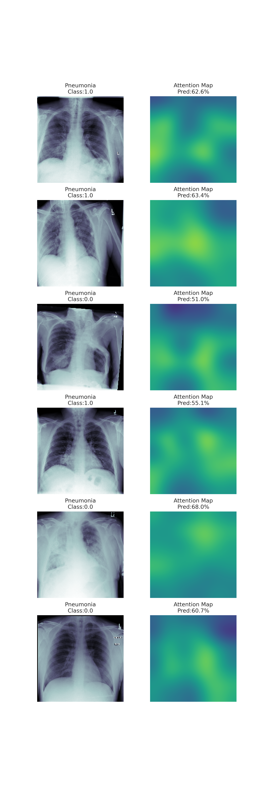
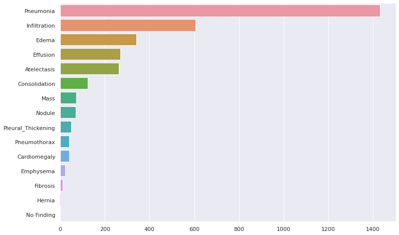

Your Name: Claudia Dai
Name of your Device: PnomoreNet
Intended Use Statement: Assist radiological diagnosis of pneumonia in non-emergency situations.
Indications for Use:
The device can be utilized right after the X-ray scan. The prediction results would arrive at the radiologist together with the scan before the radiologist reviews them.
Device Limitations: The device should not be used as a standalone pneumonia detection tool. Radiologists should review all scans regardless.
The device should be used when the following diseases co-occur due to low sensitivity/recall:
The following co-occuring diseases have a recall that matches the model's recall for Pneumonia (0.8392):
Clinical Impact of Performance: It is recommended to use the algorithm for assisting radiological diagnosis of pneumonia in non-emergency situations.
Due to the high recall of the model (0.8392) the predictions suit well to aid with screening studies and radiologists' worklist prioritization (reviewing predicted positive cases can be prioritized). All images, regardless of the prediction, should be reviewed by radiologists and not skipped.
DICOM Checking Steps: The algorithm performs the following checks on DICOM images:
Preprocessing Steps: The algorithm performs the following preprocessing steps on the images:
CNN Architecture: The model is built on a pre-trained VGG16 CNN. An attention model is built on top of the pre-trained VGG16 with convolution and pooling blocks, GAP for turning pixels on and off, and rescaling with the attempt of having the model learn attention in images.
The model outputs a probability value for binary classification with a sigmoid activation function. The learnt attention can be inspected in attention maps as below.

Parameters:
The ROC curve indicates that the model has learned something from the data.
Final Threshold and Explanation: The maximum f1-score is 0.4563 with a threshold of 0.555. In "Chexnet: Radiologist-level pneumonia detection on chest x-rays with deep learning", Rajpurkar, Pranav, et al. (2017) list a comparison of their CheXNet with the performance of radiologists:
| F1-score | 95% CI | |
|---|---|---|
| Radiologist 1 | 0.383 | (0.309, 0.453) |
| Radiologist 2 | 0.356 | (0.282, 0.428) |
| Radiologist 3 | 0.365 | (0.291, 0.435) |
| Radiologist 4 | 0.442 | (0.390, 0.492) |
| ------------------ | ------- | -------------- |
| Radiologist Avg. | 0.387 | (0.330, 0.442) |
| CheXNet | 0.435 | (0.387, 0.481) |
| ------------------ | ------- | -------------- |
| PnomoreNet | 0.456 |
PnomoreNet's f1-score is higher than both the radiologists' average and CheXNet. Because PnomoreNet has a high recall with a low precision, the model contributes value in terms of its predicive value of negatives.
Description of database of patient data used:
The data contained records from 56.49% male and 43.51% female.
The minimum age is at 0 and the maximum age at 100 (after pruning outliers of records with age > 100. For example, there were records with patient age 414.
There were 39.97% of AP view positions and 60.03% of PA view positions.

Out of all 30805 unique patients, 1008 patients have pneumonia. Out of these pneumonia patients, there are 27 unique patients who have only pneumonia and no other disease. The most common diseases that co-occur with pneumonia are: Infiltration, Edema, Effusion, and Atelectasis.
Description of Training Dataset: The training dataset consisted of 2290 image files, with a 50/50 split of positive and negative pneumonia cases.
Description of Validation Dataset: The validation dataset consisted of 1430 image files, with a 20/80 split of positive and negative pneumonia cases to approach a more realistic distribution of pneumonia in the real world.
Training and validation data was sampled from a larger dataset curated by the NIH specifically to address the problem of a lack of large x-ray datasets with ground truth labels to be used in the creation of disease detection algorithms.
There are 112,120 X-ray images with disease labels from 30,805 unique patients in this dataset. The disease labels were created using Natural Language Processing (NLP) to mine the associated radiological reports. The labels include 14 common thoracic pathologies:
The biggest limitation of this dataset is that image labels were NLP-extracted so there could be some erroneous labels but the NLP labeling accuracy is estimated to be >90%.
The original radiology reports are not publicly available but you can find more details on the labeling process here.
Original dataset contents:
Patient Population Description for FDA Validation Dataset:
Ground Truth Acquisition Methodology: The gold standard for obtaining ground truth would be to perform either a Sputum test or Pleural fluid culture. However, these tests are expensive, and diagnosis is often informed by the report of a radiologist. As this model's intended use is to assist radiologists, images can be validated by three independent radiologists per silver standard.
Algorithm Performance Standard: The performance standard for the model should be calculated with the f1-score against the silver standard. The average radiologist achieves an f1-score of 0.387. See Rajpurkar, Pranav, et al. (2017). The model's f1-score should exceed the radiologist's f1-score and statistical signficance of the improvement of the average f1-score should be taken into account when assessing model performance.